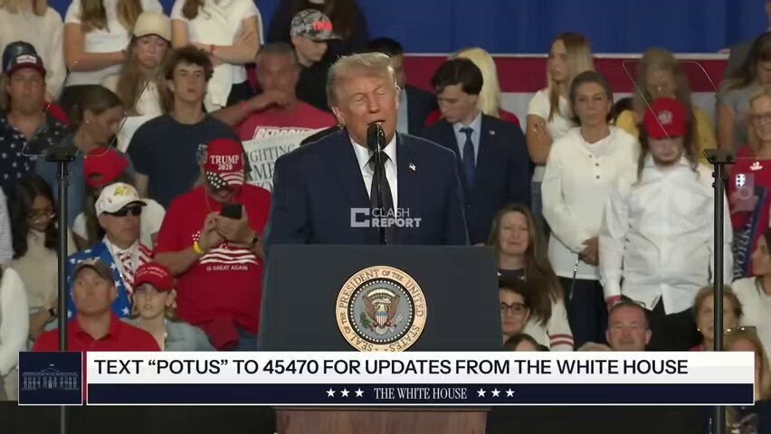

@Tasnimnews_Fa
📝 原文: خودشیفتگی مزمن ترامپ
رئیس دولت تروریستی آمریکا: من از ناهار خوردن با کسی که خیلی خیلی موفق است متنفرم، چون او مدام درباره اینکه چقدر عالی است لاف میزند و این باعث میشود نتوانم درباره این حقیقت که من رئیسجمهور شدم صحبت کنم
🇨🇳 译文: 特朗普长期自恋
美国的恐怖主义国家元首：我讨厌和一个非常非常成功的人共进午餐，因为他一直吹嘘自己有多么伟大，这让我无法谈论我成为总统的事实。


🕒 2026-05-22T20:44:49+00:00